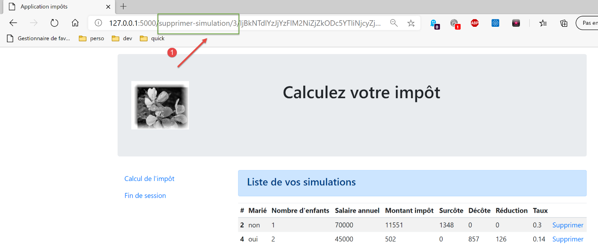
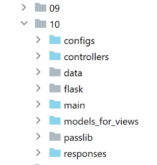

35. Esercizio pratico: versione 15
35.1. Introduzione
Questa versione mira a risolvere i problemi relativi all'aggiornamento delle pagine dell'applicazione nel browser (F5). Facciamo un esempio. L'utente ha appena cancellato la simulazione con id=3:

Dopo l'eliminazione, l'URL nel browser è [/delete-simulation/3/…]. Se l'utente aggiorna la pagina (F5), l'URL [1] viene riprodotto. Richiediamo quindi nuovamente l'eliminazione della simulazione con id=3. Il risultato è il seguente:

Ecco un altro esempio. L'utente ha appena calcolato un'imposta:
- in [1], l'URL [/calculate-tax] che è stato appena interrogato con una richiesta POST;

Se l'utente aggiorna la pagina (F5), riceve un messaggio di avviso:

L'operazione di aggiornamento della pagina riesegue l'ultima richiesta effettuata dal browser, in questo caso un [POST /calculate-tax]. Quando viene richiesto di rieseguire un POST, i browser visualizzano un avviso simile a quello sopra riportato. Questo avverte che si sta rieseguendo un'azione che è già stata eseguita. Supponiamo che questo POST abbia completato un acquisto; sarebbe un peccato ripeterlo.
Inoltre, limiteremo la possibilità dell'utente di digitare URL nel proprio browser. Prendiamo come esempio una delle viste precedenti:
I link forniti da questa pagina sono:
- [Elenco delle simulazioni] associato all'URL [/lister-simulations];
- [Fine sessione] associato all'URL [/end-session];
- [Invia] associato all'URL (non mostrato sopra) [/calculate-tax];
Quando viene visualizzata la vista di calcolo delle imposte, accetteremo solo le azioni [/list-simulations, /end-session, /calculate-tax]. Se l'utente inserisce un'altra azione nel proprio browser, verrà generato un errore. Eseguiremo questo tipo di convalida per tutte e quattro le viste dell'applicazione.
Proponiamo di risolvere il problema dell'aggiornamento della pagina come segue:
- distingueremo tra due tipi di azioni:
- azioni ADS (Action Do Something) che modificano lo stato dell'applicazione. Le azioni ADS hanno generalmente parametri nell'URL o nel corpo della richiesta;
- azioni ASV (Action Show View) che visualizzano una vista senza modificare lo stato dell'applicazione. Ci saranno tante azioni ASV quante sono le viste V. Le azioni ASV non hanno parametri;
- Finora, le azioni ADS venivano eseguite e poi completate visualizzando una vista V dopo aver preparato il relativo modello M. D'ora in poi, inseriranno il modello M della vista nella sessione e indicheranno al browser di reindirizzare all'azione ASV responsabile della visualizzazione della vista V;
- Le viste V verranno visualizzate solo a seguito di un'azione ASV. Esse recupereranno il proprio modello dalla sessione;
Il vantaggio di questo metodo è che il browser visualizzerà l'URL ASV nella barra degli indirizzi. L'aggiornamento della pagina eseguirà nuovamente l'azione ASV. Questa azione non modifica lo stato dell'applicazione e utilizza un modello di sessione . Pertanto, la stessa pagina verrà visualizzata nuovamente senza alcun effetto collaterale. Infine, grazie ai reindirizzamenti, l'utente vedrà solo gli URL delle azioni ASV nel proprio browser e avrà l'impressione di navigare da una pagina all'altra;
35.2. Implementazione

La directory [impots/http-servers/10] viene inizialmente creata copiando la directory [impots/http-servers/09]. Viene poi modificata.
35.2.1. I nuovi percorsi

Sia nel file [routes_with_csrftoken] che in quello [routes_without_csrftoken], dobbiamo creare i quattro percorsi per le quattro azioni ASV che visualizzano le quattro viste. Gli altri percorsi rimangono invariati.
In [routes_with_csrftoken]:
| # afficher-vue-calcul-impot
@app.route('/afficher-vue-calcul-impot/<string:csrf_token>', methods=['GET'])
def afficher_vue_calcul_impot(csrf_token: str) -> tuple:
# execute the controller associated with the action
return front_controller()
# display-view-authentication
@app.route('/afficher-vue-authentification/<string:csrf_token>', methods=['GET'])
def afficher_vue_authentification(csrf_token: str) -> tuple:
# execute the controller associated with the action
return front_controller()
# display-view-list-simulations
@app.route('/afficher-vue-liste-simulations/<string:csrf_token>', methods=['GET'])
def afficher_vue_liste_simulations(csrf_token: str) -> tuple:
# execute the controller associated with the action
return front_controller()
# display-view-error_list
@app.route('/afficher-vue-liste-erreurs/<string:csrf_token>', methods=['GET'])
def afficher_vue_liste_erreurs(csrf_token: str) -> tuple:
# execute the controller associated with the action
return front_controller()
|
Righe 1–23: Abbiamo creato quattro route per quattro azioni ASV:
- [/display-authentication-view], riga 8, visualizza la vista di autenticazione;
- [/display-tax-calculation-view], riga 2, visualizza la vista di calcolo delle imposte;
- [/display-simulation-list-view], riga 14, visualizza la vista di simulazione;
- [/display-error-list-view], riga 20, visualizza la vista degli errori imprevisti;
Facciamo lo stesso nel file [routes_with_csrftoken] per i percorsi senza token:
| # routes ASV -------------------------
# afficher-vue-calcul-impot
@app.route('/afficher-vue-calcul-impot', methods=['GET'])
def afficher_vue_calcul_impot() -> tuple:
# execute the controller associated with the action
return front_controller()
# display-view-authentication
@app.route('/afficher-vue-authentification', methods=['GET'])
def afficher_vue_authentification() -> tuple:
# execute the controller associated with the action
return front_controller()
# display-view-list-simulations
@app.route('/afficher-vue-liste-simulations', methods=['GET'])
def afficher_vue_liste_simulations() -> tuple:
# execute the controller associated with the action
return front_controller()
# display-view-error_list
@app.route('/afficher-vue-liste-erreurs', methods=['GET'])
def afficher_vue_liste_erreurs() -> tuple:
# execute the controller associated with the action
return front_controller()
|
35.2.2. I nuovi controller

L'[AuthenticationViewController] esegue l'azione ASV [/display-authentication-view]:
| from flask_api import status
from werkzeug.local import LocalProxy
from InterfaceController import InterfaceController
class AfficherVueAuthentificationController(InterfaceController):
def execute(self, request: LocalProxy, session: LocalProxy, config: dict) -> (dict, int):
# path elements are retrieved
params = request.path.split('/')
action = params[1]
# change of view - just a status code to set
return {"action": action, "état": 1100, "réponse": ""}, status.HTTP_200_OK
|
Abbiamo già detto che le azioni ASV non hanno parametri e non modificano lo stato dell'applicazione. Visualizziamo semplicemente la vista desiderata impostando un codice di stato alla riga 14.
Il controller [AfficherVueCalculImpotController] esegue l'azione ASV [/afficher-vue-calcul-impot]:
| from flask_api import status
from werkzeug.local import LocalProxy
from InterfaceController import InterfaceController
class AfficherVueCalculImpotController(InterfaceController):
def execute(self, request: LocalProxy, session: LocalProxy, config: dict) -> (dict, int):
# path elements are retrieved
params = request.path.split('/')
action = params[1]
# view change - just a status code to set
return {"action": action, "état": 1400, "réponse": ""}, status.HTTP_200_OK
|
Il controller [AfficherVueListeSimulationsController] esegue l'azione ASV [/afficher-vue-liste-simulations]:
| from flask_api import status
from werkzeug.local import LocalProxy
from InterfaceController import InterfaceController
class AfficherVueListeSimulationsController(InterfaceController):
def execute(self, request: LocalProxy, session: LocalProxy, config: dict) -> (dict, int):
# path elements are retrieved
params = request.path.split('/')
action = params[1]
# view change - just a status code to set
return {"action": action, "état": 1200, "réponse": ""}, status.HTTP_200_OK
|
Il controller [AfficherVueListeErreursController] esegue l'azione ASV [/afficher-vue-liste-erreurs]:
| from flask_api import status
from werkzeug.local import LocalProxy
from InterfaceController import InterfaceController
class AfficherVueListeErreursController(InterfaceController):
def execute(self, request: LocalProxy, session: LocalProxy, config: dict) -> (dict, int):
# path elements are retrieved
params = request.path.split('/')
action = params[1]
# view change - just a status code to set
return {"action": action, "état": 1300, "réponse": ""}, status.HTTP_200_OK
|
Riassumiamo i codici di stato:
- il codice 1100 dovrebbe visualizzare la schermata di autenticazione;
- il codice 1400 dovrebbe visualizzare la schermata di calcolo delle imposte;
- il codice 1200 dovrebbe visualizzare la schermata di simulazione;
- il codice 1300 dovrebbe visualizzare la schermata degli errori imprevisti;
35.2.3. La nuova configurazione MVC
Poiché era diventata troppo grande, la configurazione MVC è stata suddivisa in quattro file:
- [controllers]: l'elenco dei controller C per l'applicazione MVC;
- [ads_actions]: elenca le azioni ADS (Action Do Something);
- [asv_actions]: elenca le azioni ASV (Action Show View);
- [responses]: elenca le classi di risposta HTTP dell'applicazione;
Cominciamo con la più semplice, il file delle risposte HTTP [responses]:
| def configure(config: dict) -> dict:
# application configuration MVC
# answers HTTP
from HtmlResponse import HtmlResponse
from JsonResponse import JsonResponse
from XmlResponse import XmlResponse
# different response types (json, xml, html)
responses = {
"json": JsonResponse(),
"html": HtmlResponse(),
"xml": XmlResponse()
}
# return response dictionary HTTP
return {
# answers HTTP
"responses": responses,
}
|
Nessuna sorpresa qui.
Anche il file [controllers] non presenta sorprese. Abbiamo semplicemente aggiunto i nuovi controller per le azioni ASV.
| def configure(config: dict) -> dict:
# application configuration MVC
# the main controller
from MainController import MainController
# action controllers ADS
from AuthentifierUtilisateurController import AuthentifierUtilisateurController
from CalculerImpotController import CalculerImpotController
from CalculerImpotsController import CalculerImpotsController
from FinSessionController import FinSessionController
from GetAdminDataController import GetAdminDataController
from InitSessionController import InitSessionController
from ListerSimulationsController import ListerSimulationsController
from SupprimerSimulationController import SupprimerSimulationController
from AfficherCalculImpotController import AfficherCalculImpotController
# action controllers ASV
from AfficherVueCalculImpotController import AfficherVueCalculImpotController
from AfficherVueAuthentificationController import AfficherVueAuthentificationController
from AfficherVueListeErreursController import AfficherVueListeErreursController
from AfficherVueListeSimulationsController import AfficherVueListeSimulationsController
# authorized shares and their controllers
controllers = {
# initialization of a calculation session
"init-session": InitSessionController(),
# user authentication
"authentifier-utilisateur": AuthentifierUtilisateurController(),
# link to tax calculation view
"afficher-calcul-impot": AfficherCalculImpotController(),
# tax calculation in individual mode
"calculer-impot": CalculerImpotController(),
# batch mode tax calculation
"calculer-impots": CalculerImpotsController(),
# list of simulations
"lister-simulations": ListerSimulationsController(),
# deleting a simulation
"supprimer-simulation": SupprimerSimulationController(),
# end of calculation session
"fin-session": FinSessionController(),
# obtaining data from tax authorities
"get-admindata": GetAdminDataController(),
# main controller
"main-controller": MainController(),
# display authentication view
"afficher-vue-authentification": AfficherVueAuthentificationController(),
# display tax calculation view
"afficher-vue-calcul-impot": AfficherVueCalculImpotController(),
# displaying the simulation view
"afficher-vue-liste-simulations": AfficherVueListeSimulationsController(),
# displaying the error view
"afficher-vue-liste-erreurs": AfficherVueListeErreursController()
}
# make the controller configuration
return {
# controllers
"controllers": controllers,
}
|
La configurazione [asv_actions] per le azioni ASV è la seguente:
| def configure(config: dict) -> dict:
# application configuration MVC
# HTML views and their models depend on the state rendered by the controller
# actions ASV (Action Show view)
asv = [
{
# authentication view
"états": [
1100, # /show-view-authentication
],
"view_name": "views/vue-authentification.html",
},
{
# tax calculation
"états": [
1400, # /display-view-tax-calculation
],
"view_name": "views/vue-calcul-impot.html",
},
{
# view of simulation list
"états": [
1200, # /display-view-list-simulations
],
"view_name": "views/vue-liste-simulations.html",
},
{
# view of error list
"états": [
1300, # /display-view-error-list
],
"view_name": "views/vue-erreurs.html",
},
]
# return the ASV configuration
return {
# views and models
"asv": asv,
}
|
- Il file [asv_actions] contiene le quattro nuove azioni, la cui funzionalità è riassunta di seguito:
- non hanno parametri;
- visualizzano una vista specifica il cui modello è in sessione;
- L'elenco [asv] nelle righe 6–35 associa una vista a ciascuna azione ASV;
Il file [ads_actions] contiene le azioni ADS:
| def configure(config: dict) -> dict:
# application configuration MVC
# view models
from ModelForAuthentificationView import ModelForAuthentificationView
from ModelForCalculImpotView import ModelForCalculImpotView
from ModelForErreursView import ModelForErreursView
from ModelForListeSimulationsView import ModelForListeSimulationsView
# actions ADS (Action Do Something)
ads = [
{
"états": [
400, # /end-session success
],
# redirection to action ADS
"to": "/init-session/html",
},
{
"états": [
700, # /init-session - success
201, # /authentifier-user failure
],
# redirection to action ASV
"to": "/afficher-vue-authentification",
# model of the following view
"model_for_view": ModelForAuthentificationView()
},
{
"états": [
200, # /authentifier-user success
300, # /calculate-tax-success
301, # /calculate-tax failure
800, # /display-tax-calculation link
],
# redirection to action ASV
"to": "/afficher-vue-calcul-impot",
# model of the following view
"model_for_view": ModelForCalculImpotView()
},
{
"états": [
500, # /lister-simulations success
600, # /suppress-simulation success
],
# redirection to action ASV
"to": "/afficher-vue-liste-simulations",
# model of the following view
"model_for_view": ModelForListeSimulationsView()
},
]
# view of unexpected errors
view_erreurs = {
# redirection to action ASV
"to": "/afficher-vue-liste-erreurs",
# model of the following view
"model_for_view": ModelForErreursView()
}
# return the MVC configuration
return {
# shares ADS
"ads": ads,
# the sight of unexpected errors
"view_erreurs": view_erreurs,
}
|
- righe 11–51: l'elenco delle azioni ADS (Action Do Something). Sono incluse tutte le azioni delle versioni precedenti. Tuttavia, il loro comportamento è cambiato:
- non visualizzano una vista V. Si limitano a preparare il modello M per questa vista V;
- richiedono la visualizzazione della vista V tramite un reindirizzamento all'azione ASV associata alla vista V;
- non tutte le azioni ADS portano a un reindirizzamento a un'azione ASV: righe 12–18, l'azione ADS [/fin-session] porta a un reindirizzamento all'azione ADS [/init-session/html]. Per distinguere tra reindirizzamenti ADS -> ADS e ADS -> ASV, possiamo utilizzare il modello [model_for_view]. Questo non esiste per i reindirizzamenti ADS -> ADS;
Il file [main/config], che contiene tutte le configurazioni, cambia come segue:
| def configure(config: dict) -> dict:
# syspath configuration
import syspath
config['syspath'] = syspath.configure(config)
# application setup
import parameters
config['parameters'] = parameters.configure(config)
# database configuration
import database
config["database"] = database.configure(config)
# instantiation of application layers
import layers
config['layers'] = layers.configure(config)
# configuration MVC of the [web] layer
config['mvc'] = {}
# web] layer controller configuration
import controllers
config['mvc'].update(controllers.configure(config))
# actions ASV (Action Show View)
import asv_actions
config['mvc'].update(asv_actions.configure(config))
# actions ADS (Action Do Something)
import ads_actions
config['mvc'].update(ads_actions.configure(config))
# response configuration HTTP
import responses
config['mvc'].update(responses.configure(config))
# we return the configuration
return config
|
35.2.4. I nuovi modelli

I modelli genereranno nuove informazioni. Prendiamo, ad esempio, il modello di vista di autenticazione:
| from flask import Request
from werkzeug.local import LocalProxy
from AbstractBaseModelForView import AbstractBaseModelForView
class ModelForAuthentificationView(AbstractBaseModelForView):
def get_model_for_view(self, request: Request, session: LocalProxy, config: dict, résultat: dict) -> dict:
# we encapsulate the paged data in the model
modèle = {}
…
# csrf token
modèle['csrf_token'] = super().get_csrftoken(config)
# possible actions from the view
modèle['actions_possibles'] = ["afficher-vue-authentification", "authentifier-utilisateur"]
# we render the model
return modèle
|
- La nuova funzionalità si trova alla riga 17: ogni modello genererà un elenco di azioni possibili quando viene visualizzata la vista V, di cui è il modello M. Per visualizzare queste azioni, dobbiamo tornare alla vista V. Nel caso della vista di autenticazione:

- vediamo che la vista di autenticazione offre una sola azione, quella del pulsante [Validate]. Questa azione è [/authenticate-user];
Abbiamo scritto:
# actions possibles à partir de la vue
modèle['actions_possibles'] = ["afficher-vue-authentification", "authentifier-utilisateur"]
Nella vista sopra riportata, vediamo che se l'utente aggiorna la vista, l'azione [1] [/display-authentication-view] verrà riprodotta. Deve quindi essere autorizzata. Avremmo potuto scegliere di non autorizzarla, nel qual caso l'utente avrebbe riscontrato un errore ogni volta che ricaricava la pagina. Abbiamo stabilito che ciò non era auspicabile.
Le azioni possibili sono inserite nel modello di vista. Sappiamo che questo modello verrà memorizzato nella sessione.
Procediamo in questo modo per ciascuna delle quattro viste. Le azioni possibili sono quindi le seguenti:
Vista di autenticazione
modèle['actions_possibles'] = ["afficher-vue-authentification", "authentifier-utilisateur"]
Vista calcolo delle imposte
# actions possibles à partir de la vue
modèle['actions_possibles'] = ["afficher-vue-calcul-impot", "calculer-impot", "lister-simulations","fin-session"]
Vista elenco simulazioni
# possible actions from the view
actions_possibles = ["afficher-vue-liste-simulations", "afficher-calcul-impot", "fin-session"]
if len(modèle['simulations']) != 0:
actions_possibles.append("supprimer-simulation")
modèle['actions_possibles'] = actions_possibles
Visualizzazione elenco errori
# actions possibles à partir de la vue
modèle['actions_possibles'] = ["afficher-vue-liste-erreurs", "afficher-calcul-impot", "lister-simulations", "fin-session"]
35.2.5. Il nuovo controller principale

Il [MainController] subisce alcune modifiche:
| # import dependencies
import threading
import time
from random import randint
from flask_api import status
from flask_wtf.csrf import generate_csrf, validate_csrf
from werkzeug.local import LocalProxy
from wtforms import ValidationError
from InterfaceController import InterfaceController
from Logger import Logger
from SendAdminMail import SendAdminMail
def send_adminmail(config: dict, message: str):
# send an e-mail to the application administrator
config_mail = config['parameters']['adminMail']
config_mail["logger"] = config['logger']
SendAdminMail.send(config_mail, message)
# main application controller
class MainController(InterfaceController):
def execute(self, request: LocalProxy, session: LocalProxy, config: dict) -> (dict, int):
# we process the request
type_response1 = None
logger = None
try:
# path elements are retrieved
params = request.path.split('/')
# action is the 1st element
action = params[1]
# logger
logger = Logger(config['parameters']['logsFilename'])
…
# the /display-view-error-list action is special
# we don't check anything, otherwise we risk entering an infinite loop of redirects
erreur = False
if action != "afficher-vue-liste-erreurs":
# if error, (result] is the result to be sent to the customer
(erreur, résultat, type_response1) = MainController.check_action(params, session, config)
# if no error - action executed
if not erreur:
# execute the controller associated with the action
controller = config['mvc']['controllers'][action]
résultat, status_code = controller.execute(request, session, config)
except BaseException as exception:
# (unexpected) exceptions
résultat = {"action": action, "état": 131, "réponse": [f"{exception}"]}
erreur = True
finally:
pass
# runtime error
if erreur:
# erroneous request
status_code = status.HTTP_400_BAD_REQUEST
if config['parameters']['with_csrftoken']:
# add the csrf_token to the result
résultat['csrf_token'] = generate_csrf()
….
# we send the HTTP response
return response, status_code
@staticmethod
def check_action(params: list, session: LocalProxy, config: dict) -> (bool, dict, str):
…
# result of the method
return erreur, résultat, type_response1
|
- righe 39–44: vengono eseguiti i primi controlli sull'azione. Torneremo su questo punto. Il metodo statico [MainController.check_action] restituisce una tupla di tre elementi:
- [error]: True se è stato rilevato un errore, False in caso contrario;
- [result]: un risultato di errore se (error == True), None altrimenti;
- [response_type1]: il tipo (json, xml, html, None) della sessione, così come trovato nella sessione;
- riga 39: non viene eseguito alcun controllo se l'azione è l'azione ASV [display-error-list-view], che visualizza l'elenco degli errori. Infatti, se durante questa azione venisse rilevato un errore, verremmo reindirizzati all'azione [/display-error-list-view] ed entreremmo in un ciclo infinito di reindirizzamenti;
- Il metodo statico [check_action] è il seguente:
| @staticmethod
def check_action(params: list, session: LocalProxy, config: dict) -> (bool, dict, str):
# retrieve the current action
action = params[1]
# no errors and no results to start with
erreur = False
résultat = None
# session type must be known before certain actions ADS
type_response1 = session.get('typeResponse')
if type_response1 is None and action != "init-session":
# we note the error
résultat = {"action": action, "état": 101,
"réponse": ["pas de session en cours. Commencer par action [init-session]"]}
erreur = True
# some ADS actions require authentication
user = session.get('user')
if user is None and action not in ["init-session",
"authentifier-utilisateur",
"afficher-vue-authentification"]:
# we note the error
résultat = {"action": action, "état": 101,
"réponse": [f"action [{action}] demandée par utilisateur non authentifié"]}
erreur = True
# from a view, only certain actions are possible
if not erreur and action != "init-session":
# for the moment no action possible
actions_possibles = None
# retrieve the model of the future session view, if it exists
modèle = session.get('modèle')
# if a model has been found, its possible actions are retrieved
if modèle:
actions_possibles = modèle.get('actions_possibles')
# if you have a list of possible actions, check that the current action is one of them
if actions_possibles and action not in actions_possibles:
# we note the error
résultat = {"action": action, "état": 151,
"réponse": [f"action [{action}] incorrecte dans l'environnement actuel"]}
erreur = True
# mistake?
if not erreur and config['parameters']['with_csrftoken']:
# check the validity of the csrf token
# the csrf_token is the last element of the path
csrf_token = params.pop()
try:
# an exception will be thrown if csrf_token is invalid
validate_csrf(csrf_token)
except ValidationError as exception:
# csrf token invalid
résultat = {"action": action, "état": 121, "réponse": [f"{exception}"]}
# we note the error
erreur = True
# result of the method
return erreur, résultat, type_response1
|
- riga 2: il metodo [check_action] esegue diversi controlli sulla validità dell'azione corrente;
- righe 6–26, 45–57: le versioni precedenti eseguivano già questi controlli;
- righe 28–42: viene aggiunto un nuovo controllo. Verifichiamo se l'azione corrente è possibile dato lo stato attuale dell'applicazione. Se l'azione corrente non è possibile, generiamo un codice di stato 151 (riga 40), che assicura che l'azione corrente venga reindirizzata alla vista degli errori imprevisti;
35.2.6. La nuova risposta HTML

Le modifiche attuali si applicano solo alle sessioni HTML. Le sessioni JSON o XML non sono interessate. La classe [HtmlResponse] viene aggiornata come segue:
| # dependencies
from flask import make_response, redirect, render_template
from flask.wrappers import Response
from flask_api import status
from flask_wtf.csrf import generate_csrf
from werkzeug.local import LocalProxy
from InterfaceResponse import InterfaceResponse
class HtmlResponse(InterfaceResponse):
def build_http_response(self, request: LocalProxy, session: LocalProxy, config: dict, status_code: int,
résultat: dict) -> (Response, int):
# the HTML response depends on the status code returned by the controller
état = résultat["état"]
# find out if the state was produced by a ASV action
# in which case a
asv_configs = config['mvc']["asv"]
trouvé = False
i = 0
# browse the list of views
nb_views = len(asv_configs)
while not trouvé and i < nb_views:
# view n° i
asv_config = asv_configs[i]
# states associated with view n° i
états = asv_config["états"]
# is the state you're looking for in the states associated with view n° i?
if état in états:
trouvé = True
else:
# next view
i += 1
# found?
if trouvé:
# this is a ASV action - you need to display a view whose model is already in session
# generate the HTML response code
html = render_template(asv_config["view_name"], modèle=session['modèle'])
# build the HTTP response
response = make_response(html)
response.headers['Content-Type'] = 'text/html; charset=utf-8'
# we return the result
return response, status_code
# not found - this is an action status code ADS
# this will be followed by a redirection
redirected = False
for ads in config['mvc']['ads']:
# conditions requiring redirection
états = ads["états"]
if état in états:
# redirection
redirected = True
break
# redirection dictionary for unexpected errors
if not redirected:
ads = config['mvc']['view_erreurs']
# is it a redirect to a ASD or ASV action?
# if there's a template, then it's a redirection to a ASV action
# then calculate the model of view V to be displayed by action ASV
model_for_view = ads.get("model_for_view")
if model_for_view:
# calculation of the next view model
modèle = model_for_view.get_model_for_view(request, session, config, résultat)
# the model is sessioned for the following view
session['modèle'] = modèle
# now it's time to generate the URL redirection, not forgetting the CSRF token if requested
if config['parameters']['with_csrftoken']:
csrf_token = f"/{generate_csrf()}"
else:
csrf_token = ""
# redirect response
return redirect(f"{ads['to']}{csrf_token}"), status.HTTP_302_FOUND
|
- righe 18–35: verifica se lo stato restituito dall'ultima azione eseguita è quello di un'azione ASV;
- righe 36–46: in tal caso, la vista V associata all'azione ASV viene visualizzata utilizzando il modello trovato nella sessione associata alla chiave [‘model’];
- righe 48-60: quando arriviamo a questo punto, sappiamo che lo stato prodotto dall'ultima azione eseguita è quello di un'azione ADS. Verrà quindi attivato un reindirizzamento. Cerchiamo la sua definizione nel file di configurazione;
- riga 62: quando raggiungiamo questo punto, disponiamo della configurazione per il reindirizzamento da eseguire. Esistono due casi:
- si tratta di un reindirizzamento verso un'altra azione ADS. In questo caso, non c'è alcun modello di vista da calcolare;
- si tratta di un reindirizzamento a un'azione ASV. In questo caso, è necessario calcolare un modello di vista (righe 67–68). Questo modello viene quindi aggiunto alla sessione (riga 70);
- righe 72–76: viene calcolato l'URL di reindirizzamento;
- righe 78–79: la risposta di reindirizzamento viene inviata al client;
35.3. Test
Eseguire i seguenti test utilizzando un browser:
- Utilizzare l'applicazione come di consueto. Verificare che gli unici URL visualizzati dal browser siano URL ASV [/display-view-view_name];
- aggiornare le pagine (F5) e verificare che venga visualizzata nuovamente la stessa pagina. Non ci sono effetti collaterali;
Inoltre, utilizzare il client [impots/http-clients/09]. Poiché le modifiche apportate riguardano solo le sessioni HTML, i client [main, main2, main3, Test1HttpClientDaoWithSession, Test2HttpClientDaoWithSession] dovrebbero continuare a funzionare.
Ora esaminiamo un caso in cui un'azione è impossibile. Viene visualizzata la seguente vista:

Al posto di [1], inserisci l'URL [/delete-simulation/1]. L'azione [/delete-simulation] non è tra quelle offerte dalla vista, che sono le azioni da 1 a 4. Verrà quindi rifiutata. La risposta del server è la seguente: